1950's Westinghouse Bullet Fan - 12LA3
The Westinghouse Bullet Fan – Model 12LA3 is a striking example of mid-20th century American industrial design, blending both functionality and aesthetic appeal. Produced in the early 1950s, this fan earned the nickname “Bullet” for its streamlined, aerodynamic housing that reflected the post-war fascination with speed and modernity. The 12-inch blades are enclosed in a sturdy steel cage, driven by a powerful motor that was engineered for reliability and long service life. Its distinctive silhouette, heavy metal construction, and glossy enamel finish not only made it a durable household appliance but also a design statement in its era. Today, the Westinghouse Bullet Fan is highly regarded by collectors and design enthusiasts alike, valued both for its craftsmanship and as a nostalgic piece of Americana that represents a time when everyday objects were built to last and styled with bold character.

Step-by-step Build & Testing
-
Step 1 — Cleanup and disassembly
I first started by removing all the dirt and grass from the fan. I used some old towels i had lying around in my house to clean the surface and get all the dust and dirt out of the way. The original felt was really worn off and had exposed rusted metal sticking out of it so i had to remove it completely. Removing the felt from the fan wasnt easy. The original felt was helf in place by metal fasteners that went all around the base of the fan. Unfortunately, those fasteners cannot be removed. For reference, think about it like a ring of metal that had downward bent spikes that helf the felt in place. Since i couldnt remove the felt any other way, i had to burn it off using a small lighter i have at home. After that was done, i set the fan on the floor and pluged it in the power outlet to test it out.
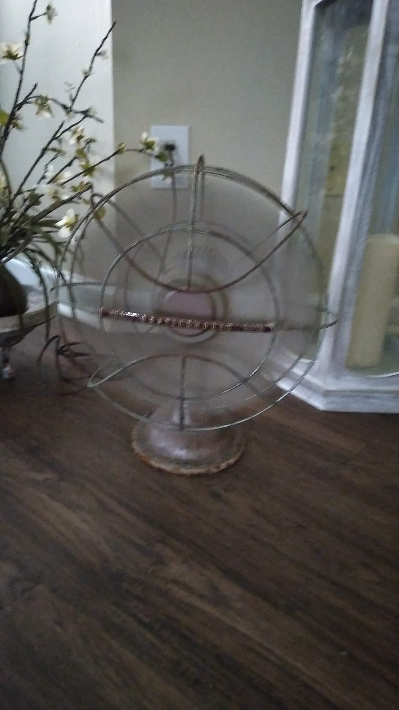At first it did not move at all but it made a humming sound from the motor inside. Thats when i knew that not all was lost. I quickly noticed that the original power cord showed a lot of wear so i had to be careful whenever i pluged it in the power outlet. The first step into disasssembly was to check for the main screws that held both of the fan casings together. Underneath the circular metal vent there are 2 main screws and at the far end where the oscillation component is located there is another set of 2 main screws underneath it. I unscrewed all 4 screws and both casings fell off. The only issue with this was that when the casings separated, small parts and gears fell from the inside and i didnt get to look where these pieces went. It would later become a challenge figuring out where each of these small but crucial parts went.
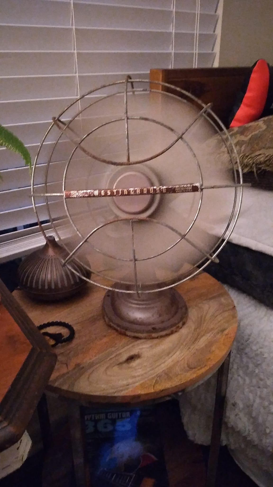The first thing i noticed when i opened it up was the amount of dirt in the old grease, dust everywhere, and some of the wire coverings where very brittle because of how old it was.
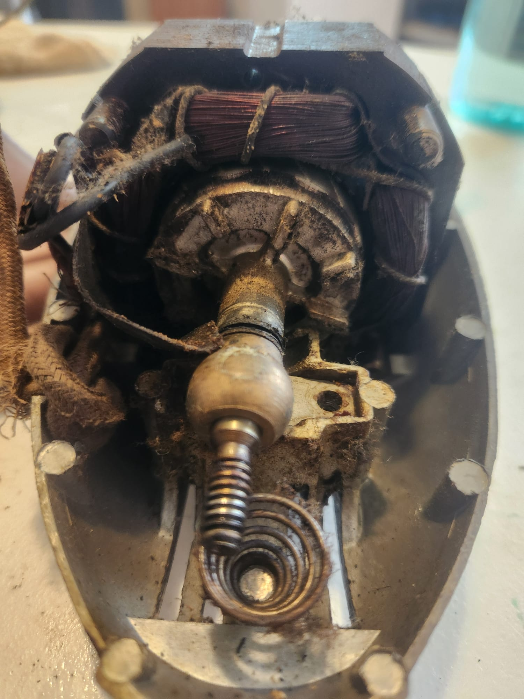One good thing was that the stator was still in good conditions and the wires worked fine as well as the rotor armature. For the stator and the rotor armature i just did a deep clean with some cloth, a tweezer to get the tiny debris, and a cotton swab to clean the small spaces. Next, i took the rotor out of the stator and cleaned the stator up. The rotor has two round bushings on the side that rest on a hole. The bushings need a grease to keep it lubricated when working but when i took it out this grease had been lost. One thing that i noted about the stator is that the wires that held the stator wires in place were still in really good condition and so i didnt mess with them at all. I checked to see if the stator wires were good and working. When i pluged it in to the power socket, i noticed that electricity was still flowing through the wires so that was a good indication that no wires were damaged or cut. i moved these pieces to the side once i examined all of them and moved on to the wiring from the base of the fan.
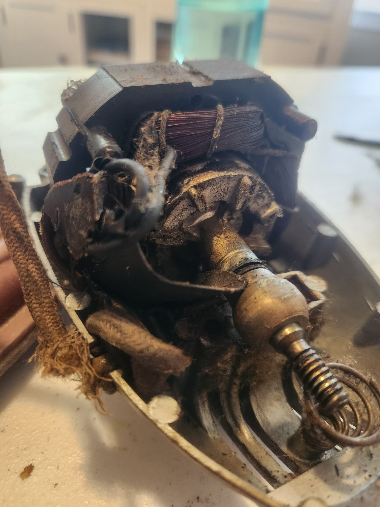Next, i opened up the base plate of the fan where the inner wirings were. Here i found the speed control switch and all the wiring that went directly to the motor. The switch has two speeds: high speed (215v) and low speed (125v). Unfortunately, the low speed setting was damaged and the fan could only operate at high speed and OFF. Normally vintage machines like this have cloth covering the wires. In the picture below, you can see the old cloth that has been worn out exposing the wires. This poses a fire hazard so i had to remove all the wires, buy new ones, and rewire everything again. I will show that in later pictures when im doing the assembly of the fan with the new parts. I cleaned up the inside with cloth and cotton swab like i did before with the other parts. Overall the inside of the base plate wasnt too bad asides from having to rewire everything. The inside was mainly intact and not as dirty as i imaged so it didnt take that long to clean up.
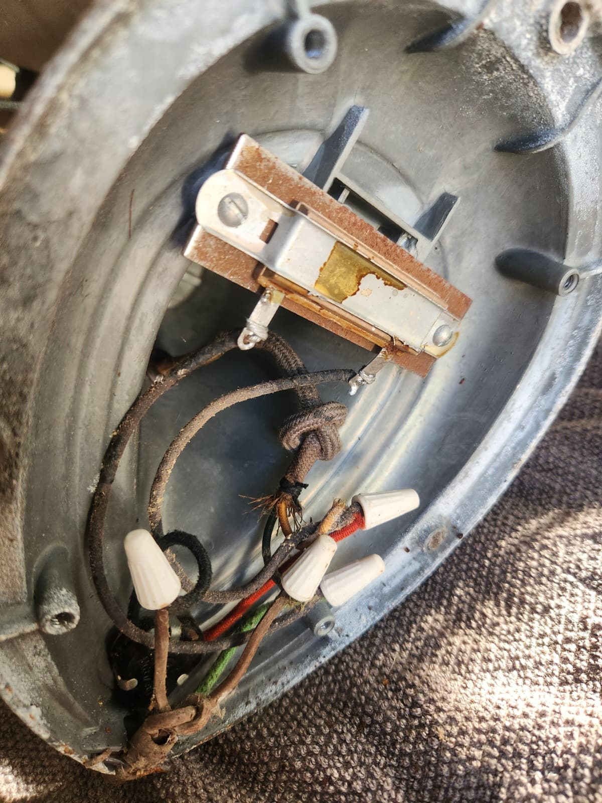I have to mention these 3 parts as they are very important in making the fan oscillate. Although i dont know the name for these parts, i will explain them the best i can. Lets start on the left. The piece on the left goes mounted underneath the bottom casing of the fan where the oscillating system is located and were the stator rests. This piece is held with a lock pin that secures it in place. Once this part is mounted to the guard of the fan, it is screwed on the sides allowing the fan to tilt up and down. The way this part allows the fan to move left and right is through the metal pin thats sticking out of it. On the right side of the image we have a thin metal plate with a hole on one end and a hook on the other end. This hook is the one that goes attached to the pin sticking out of the left piece while the hole at the end of the plate goes attached to a small opening at the back of the oscillating piece that i will show later. Finally, the washer in the middle goes on top of a larger pin that sticks out of the bottom casing and fits in the hole located at the center of the left piece shown in the picture.
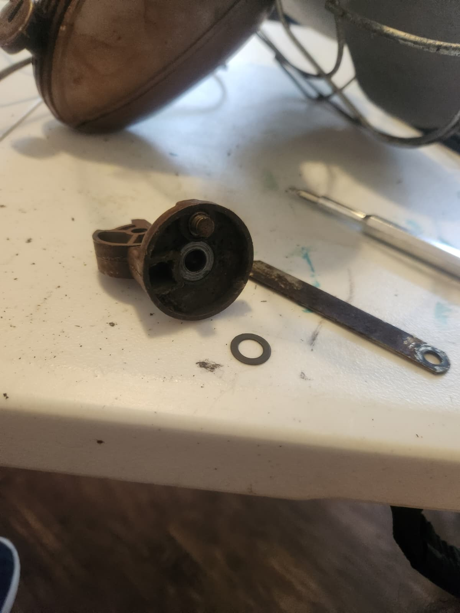 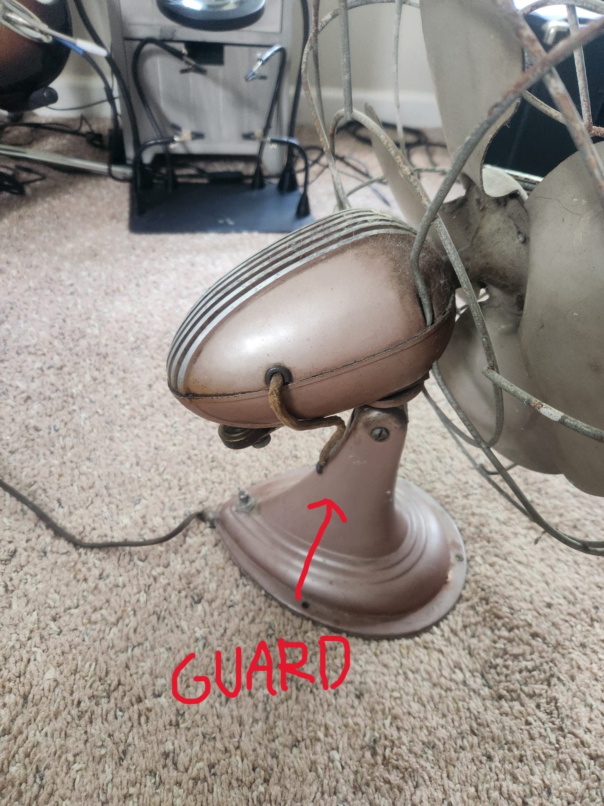 -
Step 2 — Painting and rewiring
The first part i worked on in this section was the base plate. i used a product called Evaporust to completely remove all the rust the metal plate had. I left the plate completely submerged in Evaporust for 24hr and when i took it out of the liquid the rust was completely gone. Next, i proceeded to clean it up completely with a towel and left it to dry outside in the sun. i used an electric sander to smoothen out the metal and remove any burrs that might be left. Once the sanding process was complete, i cleaned it up again with a towel and proceeded to paint it.
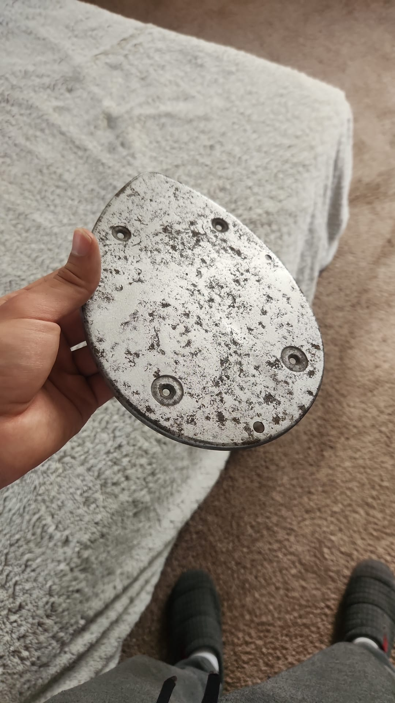The spray paint used for the metal plate is a silver Rust-Oleum bright coat metallic finish spray paint. It protects from rust, corrosion, and is made to be used on metal surfaces. All the spray paint used in the fan painting is from the same brand, Rust-Oleum.
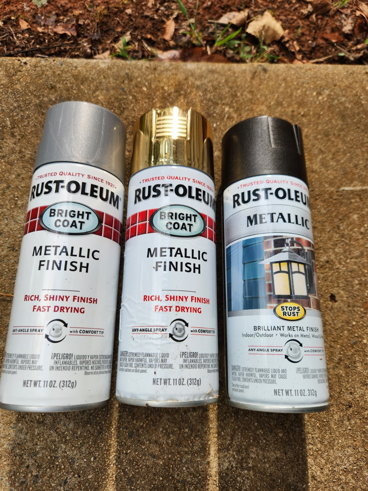 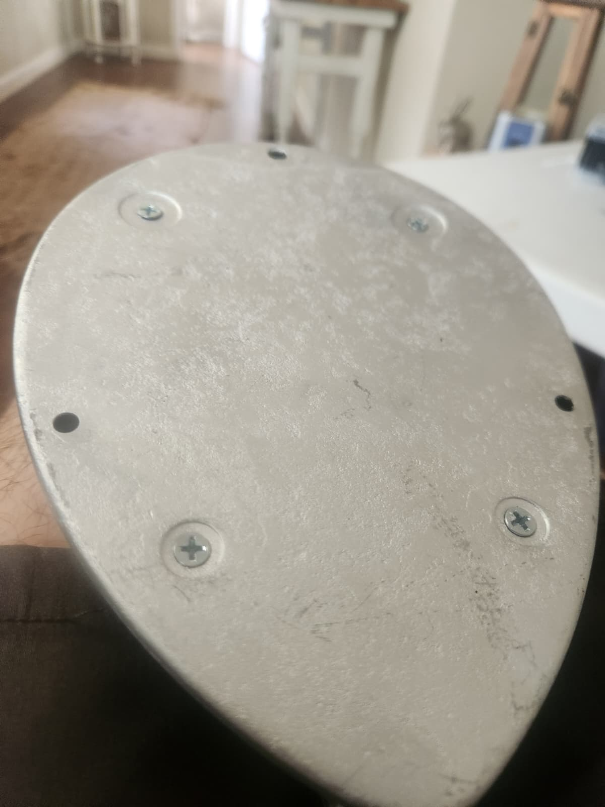The picture above is the final result of the metal base plate.
Next, i went on to work on the fan blades.The fan blades were in good conditions asides from a small crack that had formed. This wasnt going to pose any significant problem in the long run because of how small the crack was, which is good. As you can see from the picture below, the fan blades were in good conditions and needed just a little amount of work. In order to take the fan blades apart, you need to unscrew a set screw located at the end of the blade mount that screws directly to the rotor. Use a flat head screw driver to unscrew the set screw and the fan blade will slide right out.
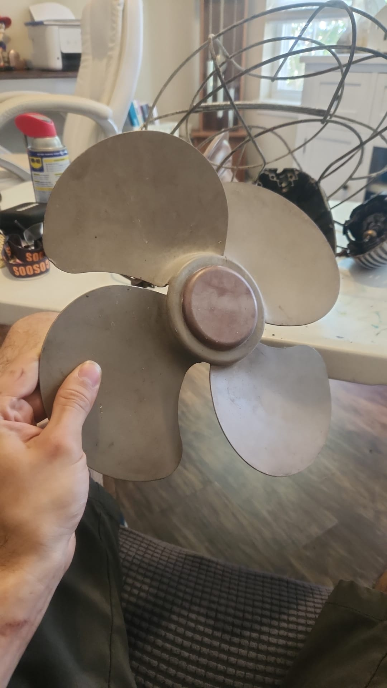Once the blades came off,i sanded the blades to remove any burrs that were present. There were quite a few burrs on the blades, so the sanding process was needed. Next, i used a Rust-Oleum gold colored spray paint and painted the blades. I painted one side first on top of some cardboard, left it to dry, and then painted the back of the blades. You can see the final result in the image below.
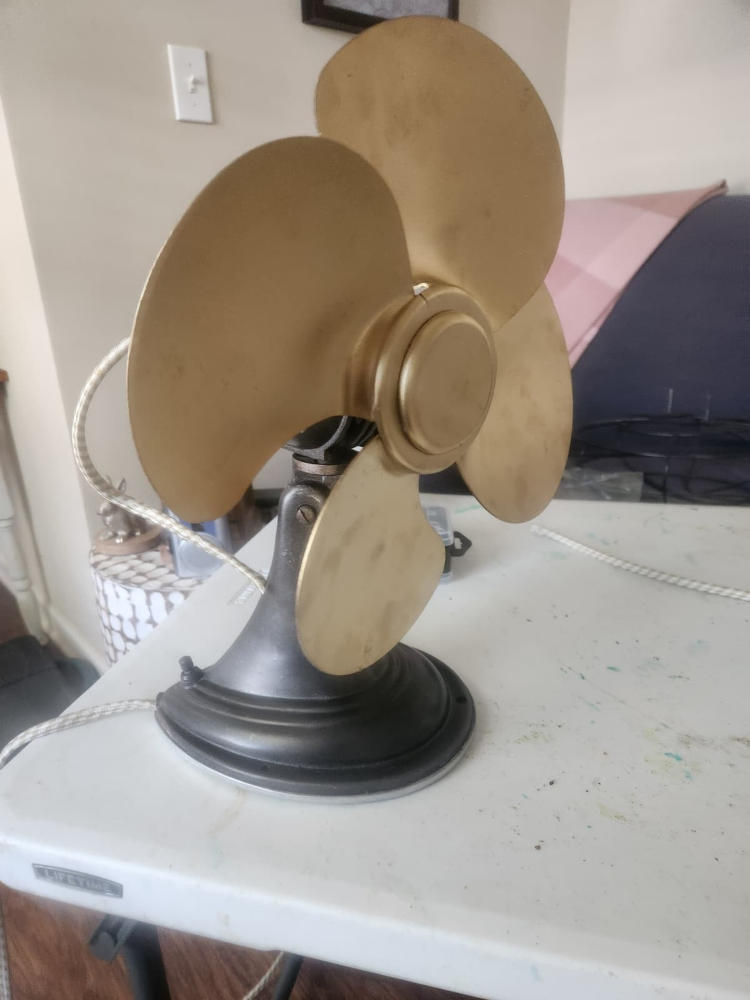The next part of the fan to be worked on was the guard. The guard of the fan was actually pretty easy to work on because it needed very little rust removal. I used a Rust-Oleum dark gray color spray paint on it. For all these parts, I painted them on top of cardboard to not make a big mess later on. Asides from that, the guard was easy to work on.
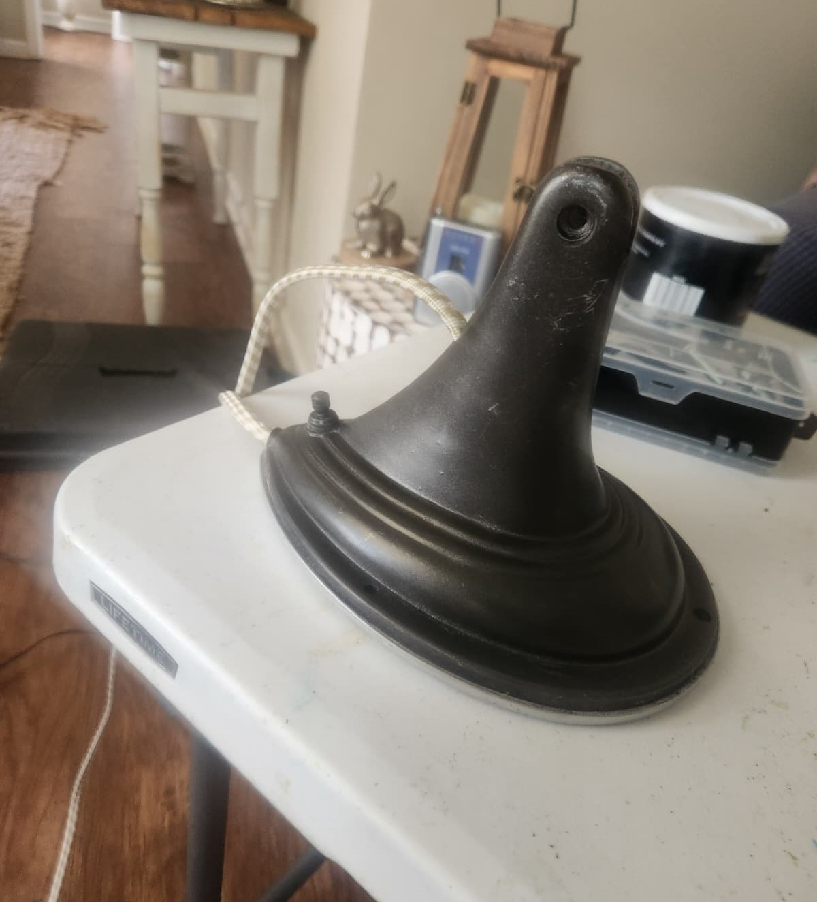The final parts to paint were the two metal casings of the fan. First, i made sure to check that the inside had been cleaned really well. I did this back when i was disassembling the entire fan. Once i checked that it was clean, i put some scotch tape on the inside of the casing were there are cuts to allow air to flow. I did this so that when i used the spray paint on the outer shell of the casing the paint will not go to the inside of the casing. I did this for both metal casings of the fan. I used the same drak gray Rust-Oleum spray paint from the guard for the casings. The final result can be seen in the image below.
 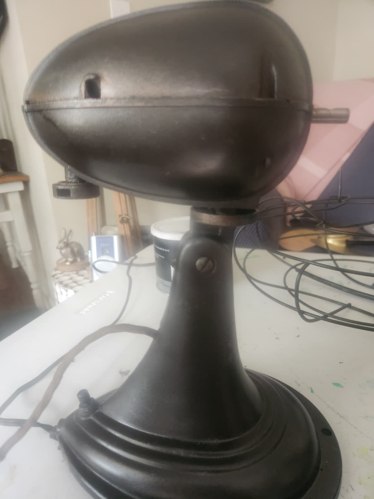
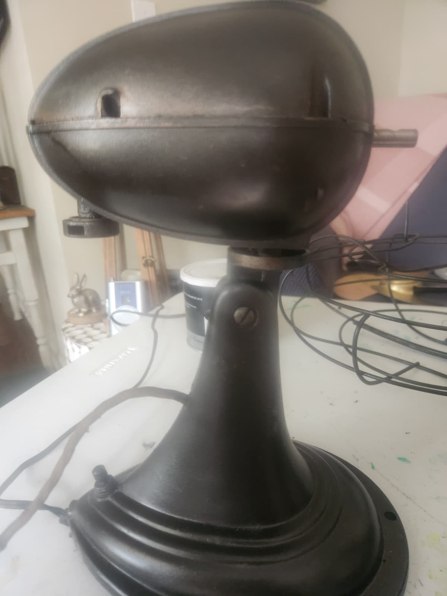
Once the painting of the parts was done, i moved on to working on the wires of the fan. The original wires were damaged and very worn out. This posed a fire hazard and had to be changed immediately. As you can see from the image, the wires were so old that they started to peel off and expose.
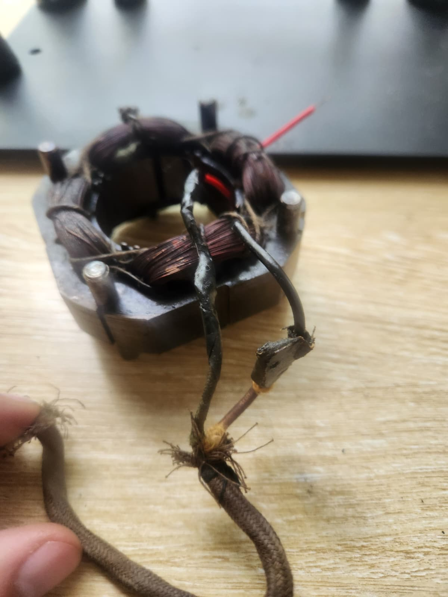 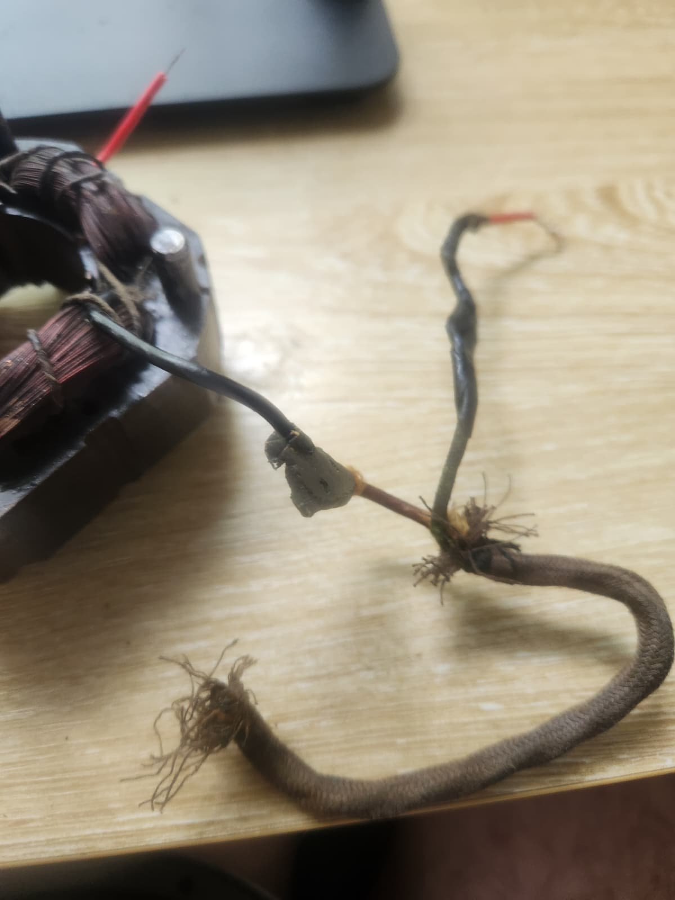Although it may not be visible in the images, but some of the wires were even melted from exposure to high temperatures outside in the street. First i started to work on the wires from the stator. I took pictures of the arrangement of the wires from the stator so that i would not get lost when rewiring everything. I cut the old and exposed wires and replaced it with new ones. However, i didnt touch the wires from the stator that wind up. They exit the stator into the red and black wires shown in the picture. Those are the ones i had to cut and put new insulation. Once i had put the new insulation to the red and black wires, I moved on to the wiring from the base of the fan where the speed control is located.
The wiring from the base plate is were the main speed control of the fan is located. There are 3 wires in this image: black, red, and green. The black wire goes to ground, the green wire goes to speed 1 (250v) and speed 2 (125v). I took a picture of them before removing the old wires so that i could remember where each of the wires went. Once i had done that, i removed all the wires from the base plate.
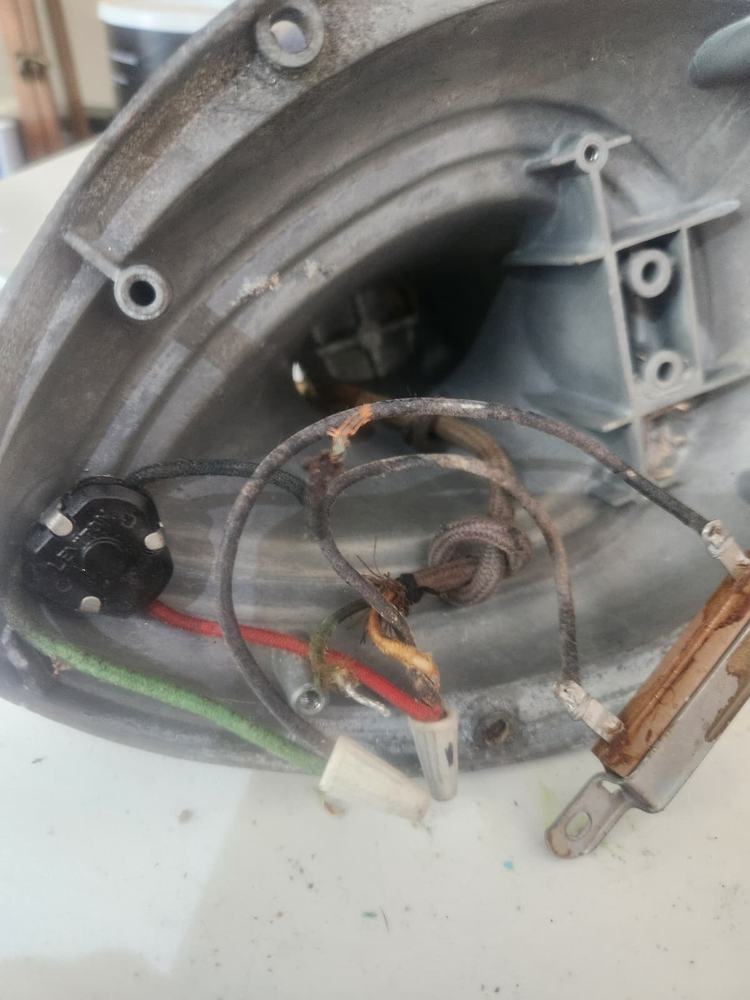I looked up on amazon and other websites for a 2 way speed control switch for an antique desk fan but i couldnt find one that fit. Instead, i found one that only had one speed (250v) and that could fit in the small space it had. I bought a Gardner Bender GSW-62 Electrical Rotary Switch from Amazon and it worked perfectly fine. Once i received it, i began working on rewiring everytihng. I also went to Lowes and got a long power cord that i could use to replace the old one from the fan. Now that i had all the materials necesary, rewiring wasnt so bad because i already had the picture as a guide of where each of the wires went.
-
Step 3 — Final assembly and testing
Now we come to the final assembly of the fan. First, we mount the bottom casing to the guard of the fan. Once done, we then proceed to mount the motor. Inside the bottom casing there are cylindrical cuts where the edges of the stator rest. You place the stator in those cuts and insert the rotor in the stator with the threaded end facing the back end of the fan. This threaded end is important because it is the one that moves the gears of the oscillating system at the back of the fan. Even though the gears of the oscillating system are not visible in this image, they are located undearneath the black plate at the back end of the fan.
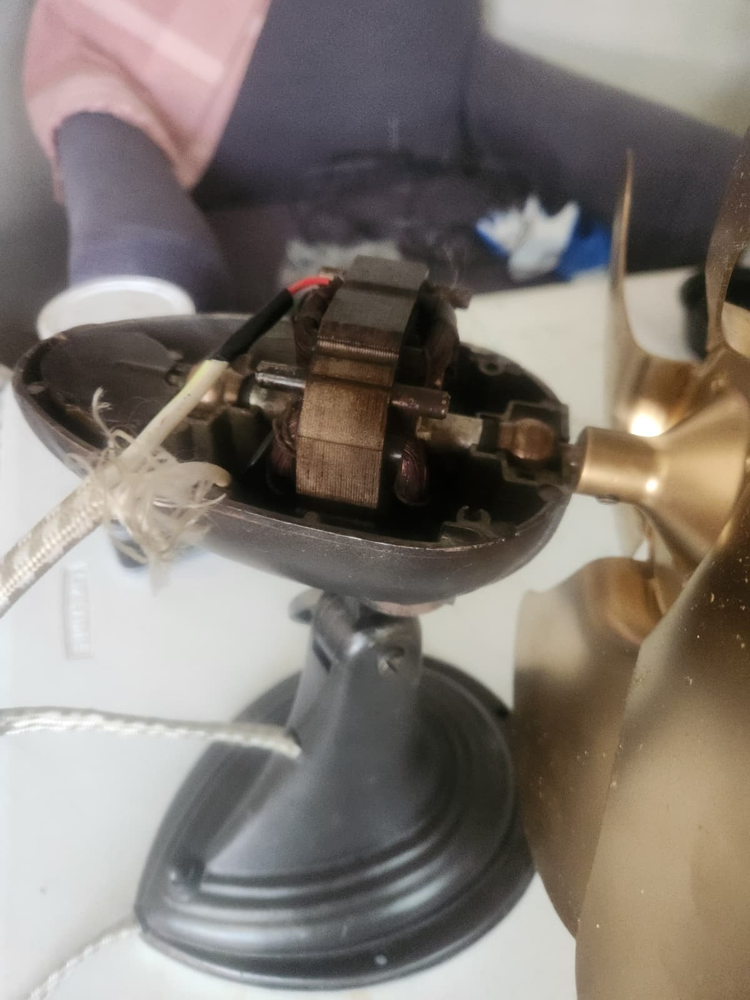Inside the bottom casing there are two sets of holes located on the far ends. These holes are for felt wicks. The felt wicks are used to lubricate the rotor of the fan as it spins. Apply a good amount of machine oil to the felt wicks so that they are saturated with oil and can lubricate the rotor for longer periods of time. In the following image i have pointed with arrows where the felt wicks go. I bought new felt wicks since the original ones were really old and stiff so they didnt work anymore. Take the fan blades and put them inside the circular vent of the fan. Once these parts are assembled, take the fan circular vent and insert the end rods on the holes located at the sides of the bottom casing. Push until the rods are fully inserted on the holes. Now move the blades of the fan inside the circular vent and slide them inside the rotor. There will be a hole where the set screw goes that holds the blades and the rotor together. Use a flat head screw driver to screw the set screw in place. Finally, place the top casing of the fan on top of the bottom casing, hold both parts together with your hand so that they dont open up and screw back the four main screws that hold the metal casings together.
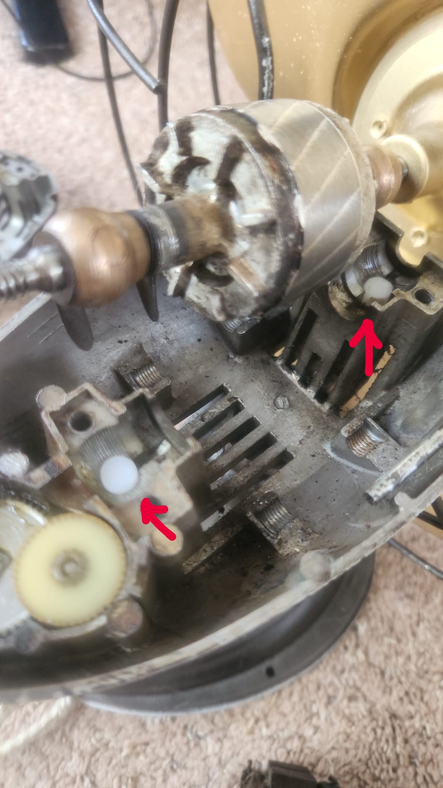Now that everything is assembled, the fan is now ready to use. To turn the fan on, turn the speed control switch clockwise once. Turn it clockwise one more time to shut it down. Every six months make sure to give the fan maintenance by applying more machine oil to the felt wicks and grease on the oscillating gears. The final result is shown in the image below.
Technical Specifications
| Parameter | Value |
|---|---|
| Antique = yes | Vent style = circular |
| Power source = electrical | Color = grey |
| Item diameter = 14in | MPN = 12LA3 |
| Material = metal | Item Depth = 10in |
| Brand = Westinghouse | Vintage = yes |
| Original/Licensed Reproduction = original | Type = table/desk |
| Item Height = 16in | Model = 12LA3 |
| Features = oscillation | Country/Region of Manufacture = United States |
| Item Width = 14in | Item Weight = 8 Lbs |